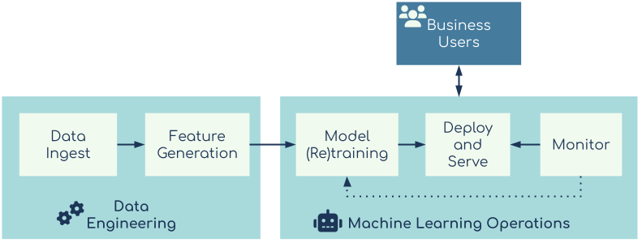

4: COPML in Practice
xIn this section we will outline some specific implementation methods and actions to take when architecting and implementing production machine learning systems. We call this methodology Continuous Operations for Production Machine Learning (COPML). This is not just about automation of model tracking, it also includes the various factors that need to be considered so that machine learning projects continually deliver successful business outcomes. This is a methodology by which enterprise users can maintain production machine learning systems in place with the minimum amount of input human input and while also adhering to the specifics and the more intangible requirements for this production machine learning project.
Why not just use Continuous Delivery?
"Continuous Delivery is the ability to get changes of all types — including new features, configuration changes, bug fixes, and experiments — into production, or into the hands of users, safely and quickly in a sustainable way".
-- Jez Humble and Dave Farley
It’s worth asking why an existing framework like continuous delivery (CD) can’t simply be adapted to work for production machine learning. Software engineers and teams that use CD effectively, will know that it provides an easy and efficient way to iterate and update software. In fact there are other approaches to conscientious operations for machine learning that take this approach: See here.
However, there are some fundamental requirements that can’t be addressed through this process. CD may be able to keep models operating, however, it lacks the flexibility to address the less structured and clear-cut aspects of sustaining a project. The COPML methodology on the other hand is far more accommodating of necessary interventions to the system, whether these are automated or manual. Understanding when and how these interventions need to happen is an iterative process. In other words, there needs to be a period of initial adjustment during which optimizations can be made. CD cannot accommodate this.
Another issue that makes CD a less than ideal approach for managing and sustaining machine learning projects in production is that the CD methodology has been optimized for software systems. However, data science teams are not primarily software developers –their interests and concerns are broader than the proper working of the code. They, necessarily, have to take a whole system view. Consequently, they need a methodology that allows for continuous operations and continuous optimization by people who are as skilled at understanding the output of the system as well as the statistical metrics underlying them.
COPML Overview
This methodology has two main success criteria, the fulfillment of business requirements and regulatory requirements. It costs money to get the infrastructure, software and people needed to implement effective machine learning applications and systems. Therefore, one important metric for success is a quantifiable return on that investment. Business requirements focus on indicators related to this outcome.
The regulatory requirements relate to implementation considerations which ensure that the machine learning project is compliant with all the relevant legal, industry and ethical standards. In the next section we consider these two requirements in further detail and discuss how the COPML methodology delivers against them .
Business Requirements
As already discussed, a higher level business requirement is always the impetus for a machine learning project. There is usually an explicit metric associated with the business requirement, for example, in the churn reduction scenario described above, this metric was the churn rate and the target was for it to be reduced from 10% to 5%. Consequently, the focus for the machine learning project is the correct identification of customers who are likely to churn and the application of retention strategies. If this fall in the churn rate is achieved it is tempting to rule the project a success. However, it's possible for a project to satisfy its primary business metric but do so at too high a cost. If this happens the project will still be deemed a failure. This is why it is important not to over-capitalise these projects. Taking the following steps will help keep running costs down.
Availability
Availability in IT terms is a reference to infrastructure uptime. If the machine learning model is able to make new inferences, it’s considered available. High availability design for IT systems is a well understood and documented field. The requirement here is to align the availability for the deployed machine learning models with the needs of the relevant business processes. Assuming the business is getting value from this machine learning model it needs to remain accessible, but there is context that needs to be set according to value derived from the machine learning model.
In the churn example, the batch implementation does not require compute resources to be deployed continuously for the model to be useful. A simple implementation would probably run once a week, a table is updated with the relevant predictions and the retention process can be managed manually, using this data. Therefore the availability requirement can be satisfied by the underlying CML/CDSW platform that the job runs on. Using CML in the public cloud with the Jobs function will keep the costs relatively low while still meeting the business objective.
For the pneumonia example however, the real-time model needs to be highly available, every day of the week. For a real-life use case with this level of importance, an uptime or availability metric might be set as high as 99.9% or 99.999%. In this instance real-time CML models can be deployed using replicas and availability metrics set in the public cloud to ensure near continuous availability of the API endpoint. However, in the case of especially high availability requirements, it would be best to implement a backup CML workspace in a different cloud provider or region, running the same model, also using replicas and have any applications fail over to using the backup model API.
When considering the availability requirements for any production machine learning project, the key decision is the balance between cost of the infrastructure required to make the model available and the business value that the model provides.
Action Items:
- Decide on the required availability for the model based on the business objective
- Create an architecture to support this availability requirement
Effectiveness
Once the machine learning model is in place and meets the availability expectations, it’s necessary to create measurable model performance objectives to evaluate the effectiveness of the machine learning model. The reality is that most machine learning projects implemented in an enterprise context are fairly mundane and lack the fanfare of beating a world chess or Go champion. However these projects still need to be performing at a high enough level for the business to derive benefits from the money invested into it.
Creating a measure of effectiveness requires well-defined success metrics for the outcomes of the machine learning model implementation. These metrics should cover both the statistical/mathematical performance of the model and its satisfaction of business objectives. We have seen a tendency among data science teams to focus very heavily on the statistical measures of model performance. While this is important, it’s not necessarily the most important yardstick of success.
For the churn prediction example, the business set a churn rate target i.e. to drop the monthly customer churn numbers from 10% to 5%. The model can be measured statistically using one of the binary classification evaluation methods available. If the chosen measure is accuracy, the model’s statistical performance will be its ability to accurately predict which customers will churn and which won’t. The example project creates a model that has an accuracy measure of 80%. Assume that once the model is in place, those customers who are predicted as likely to churn are put through some retention process that keeps the customer rather than having them churn. This will have two effects: Firstly this will reduce the churn rate for that month of measurement, let’s say from 10% to 7%, but it will also reduce the accuracy of the model. Those customers who were predicted to churn have gone through the retention process and will now stay. Therefore when measuring the model performance at the end of the month, the accuracy could drop to 75%. But the model is still effective. However it would now be prudent to retrain the model as some customers will have churned despite the retention process and the model can now be optimized to better identify these customers and possibly implement a different retention process.
For the pneumonia model, the key metric is the false positive rate as the consequences of an inaccurate diagnosis are severe. This means optimizing the model for sensitivity. In the example project the first model, which is used to detect if the patient has pneumonia, currently has an accuracy of 97%. The second model, which is then used to predict the type of pneumonia needs to be optimized for accuracy. The example project has an accuracy of 80%, which will be considered the minimum accuracy level for the project. Both measures need to be tracked over time, but this is done in batches where the outputs from the models are then compared with the real-world values to check the model performance. The key business metrics to track are the number of false negatives the first model produces and the number of times either model requires human intervention to confirm a prediction. Tracking these values over time will determine the overall effectiveness of the whole project.
This process of continuous testing and retraining is outlined in the next stage, but for now the requirement is to create an effectiveness measure that allows for an evaluation of the overall machine learning project with the business objectives.
Action Items:
- Set up agreed measurements for the effectiveness of this production machine learning process. These should include both statistical measures for explicit model performance and business metrics for overall performance. This can include costs of infrastructure and people involved as even a well performing machine learning model may simply cost too much to be of long term business benefit.
- Create trigger points for these effectiveness measurements and actions to be taken when a threshold is reached.
Automation

One of the biggest operational costs of any machine learning project will be the teams that support it. There is the direct cost associated with the various data teams working on their respective parts of the project to get things up and running, but there is also the opportunity cost of having these teams do something that could be automated rather than working on other projects. As much of the process as possible needs to be automated. Within the standard workflow described, the following components can be automated with components from CDP.
Data Ingest (CDE)
This can be a continuous process or a periodic one but the actual implementation isn’t determined solely on the requirements of the downstream applications that are dependent on the model. The large data platform requirements will also have to be taken into account.
For the churn example, customer data is always changing and many other systems use this customer data. Therefore data ingest will likely be automated anyway, outside of the need for training the machine learning models. However there might be an intermediate feature creation step that isn’t part of the standard pipeline which will also have to be automated. A CML job can be run once a week that creates a feature store that will be used to retrain the model.
For the pneumonia x-ray example there needs to be an automated data collection process that puts the images and the results from the predictions made by the model(s) and any manually obtained data into a data store that can be used for model retraining.
Action Item:
- Decide on any new or additional data ingested automation tasks specific to this machine learning project that is covered by other data usage requirements. This could include creating a feature store specific for machine learning model training. Schedule these as automated processes to run on the required frequency.
- Assume the end state for this data ingestion is to make the data available to model retraining jobs as well as the data science teams for the purpose of (additional) exploratory data analysis and model optimization.
Model Monitoring (CML Model SDK and Jobs)
Model monitoring automation will likely follow with the availability requirement. Automated monitoring should cover the availability and effectiveness requirements of the project. These factors should also inform the frequency of monitoring.
In the churn example, customer churn is measured monthly, therefore an automated process that runs once a month to evaluate the model performance will suffice. Depending on the outcome of the model evaluation process, other tasks can be triggered e.g. model retraining, model redeployment etc.
For the pneumonia x-ray example, the model uptime needs to be monitored to ensure compliance with the stated availability metric. Whenever the model becomes unavailable, the monitoring process should raise an alert. The performance of the pneumonia x-ray model can be automatically evaluated after a certain number[3] of predictions have been made. This will also inform decisions about thresholds set for retraining etc.
Some threshold values will serve as indications of declining model performance or significant changes in the data landscape which can not be fixed purely through automated remedies. These values need to be identified during the model build and exploratory data science phases and (can be programmatically) set as additional thresholds in model monitoring. When these thresholds are breached, the subsequent automation tasks should include an alert or notification for human evaluation. In the churn example, the model accuracy dropping to 70% (or lower) for three consecutive months with a customer churn rate that remains at 10% (instead of falling), is considered a performance failure scenario. If the automated model retraining and redeployment interventions fail to improve the model performance, then this is a trigger for an evaluation of the entire project.
Action Items:
- Decide which metrics (such as granularity and frequency) need to be monitored as part of this project informed by insights gleaned from the availability and effectiveness steps.
- Implement the monitoring processes and create triggers and actions should any metric cross a threshold for these values.
- Consider how re-evaluation of the ML project/application will be triggered and which automated tasks should trigger this and at what threshold.
Model Retraining (CML Jobs)
In a constantly changing data environment, the performance of machine learning models can ‘drift’ and become less accurate (and by extension, less value-adding) over time. The Model Monitoring section of the workflow addresses requirements related to tracking and detecting changes in performance. It also supports some automated mitigations for drops in performance e.g. model retraining. This is one of the easiest parts of machine learning automation to implement, because the model training process has already been created during the original model build. Provided the data is accessible, whether in raw form, or in an intermediate form via a feature store, most machine learning platforms will support automated model retraining. The CDSW/CML Jobs capability allows for model retraining automation with variable infrastructure requirements.
For both example projects, the model retraining is done using the CML/CDSW Jobs function. This is done using 2 separate jobs. The first job will check the current metrics stored with the deployed model using the model metrics feature. If the value of the metric drops below a threshold, a second job is triggered that will perform the model retraining and redeployment.
For the pneumonia x-ray example, a real world implementation using tens of thousands of images and a more complex pretrained model, model retraining could require 100s of GPU nodes for a few days to run. CML in the public cloud can facilitate this rapid scale up and scale down capability.
Action Items:
- Decide on the infrastructure needed for model retraining and the likely frequency.
- Implement an API based automated system that can launch and run the model retraining process from a task within the model monitoring process or any other external process.
Model Re-Deployment (CML Models and Jobs)
Once a model has been retrained, this new model needs to be deployed. The model deployment (i.e. real-time or batch) will dictate the type of automation that will need to take place.
For the churn example, when implementing in batch mode, this automated process will be to replace the model artifact used during the batch run. The model training job in the sample project overwrites the file used for the batch prediction job.
For the pneumonia x-ray example, this is a live model and needs to adhere to an uptime requirement. The example project redeploys the newly trained models to replace the existing live model API endpoints. For a real world implementation, the new model end-points should be deployed and tested using the newly trained model first and then the overall pipeline can be switched to this new model. CML provides for this automation through the model API, but monitoring and keeping track of availability should be maintained during this process.
Action Items:
- Create an automated task that will deploy the new model into production and decide on how it will be triggered.
- Maintain model monitoring for real-time models that have an uptime requirement
Risk Management
From the perspective of the business, the success or failure of the machine learning project is often viewed in terms of the project's ability to deliver a return on investment. The assessment of risk can be quite narrow and may not be considered in regulatory, security and reputational terms. Issues of security and reputational risk need to be considered and addressed as part of the larger project implementation (regulatory risk is addressed in the next section). As is the case with any applications within a data platform that handle personally identifiable information (PII), machine learning models need to be appropriately secured. This is true even though the model does not directly ingest PII. There are real risks of inadvertently leaking sensitive data if the model is accessed by malicious actors e.g. using so-called inversion or membership inference attacks facilitated through surrogate models[4].
Another source of risk for a machine learning project lies in unidentified biases that are inherent in the underlying data used to train the models. This type of risk can be hard to detect and quantify. This is why we recommend that for any significant business investment in machine learning, organizations should consider commissioning an external auditor with experience with these kinds of projects. There is also newly proposed EU legislation (pending review) that will limit the purposes to which machine learning can be applied.
Note: For both example projects, it is assumed that these implementation risks are managed and implemented outside of the CML/CDSW project. Both projects contain PII which the CDP platform can help to secure in a number of ways including, for example, redaction. Neither of the example projects referenced in this document has been assessed with regards to inherent bias in the underlying data.
Action Items:
- For projects with any significant business investment is required and where there are large data sets of any personally identifiable information, the data and the security processes should be externally audited to check for bias and security risks.
Regulatory Requirements
Many countries and regions have regulatory requirements which govern the type of data that can be collected, the conditions under which this can be done and the ways in which such data must be managed. For example, organisations operating within the European Union are subject to the General Data Protection Regulation (GDPR), and healthcare providers in the US have to comply with the Health Insurance Portability and Accountability Act (HIPAA). Many of these regulations are understood with regards to data privacy and security. However there are specific conditions, especially within GDPR, that have implications for the use of automated decision making. For example, Article 22 of GDPR[5] grants the data subject the right to an explanation for decisions that are solely algorithmically-driven. This has implications for the design and implementation of machine learning applications, including whether or not to incorporate (demonstrable) human oversight, and if so, where and how. Satisfying the requirement for an explanation of an algorithmically-driven decision would involve finding the correct version of the data and machine learning model used to make the decision. It would also be necessary to explain which variables within the data informed the model’s decision. Lastly, it is likely that your organization will need to demonstrate the consistency of the decisions made by the ML application by being able to reproduce the decision given the same data and model. Otherwise, a complainant could credibly claim that your ML application or system leads to arbitrary and potentially unfair outcomes. Even if your ML-enabled application or system has sufficient and demonstrable human oversight, it is still a good idea to be able to answer these questions as these are the types of questions a regulator might ask. That’s why the rest of this section is dedicated to exploring how Cloudera’s CDSW/CML experience coupled with the COPML methodology can help you build ML implementations that are auditable, reproducible, and explainable.
Auditability
The regulatory requirement regarding auditability for machine learning is specific to the model and data used to make a prediction. The requirement for GDPR is to know which specific version of the model made the prediction, the data for that prediction and the data used to train the model. The first two requirements are specific to auditability and in CML/CDSW, these requirements can be implemented using the model governance feature to track model versioning and data lineage (in CML/CDSW this is the equivalent of a model registry) and the model metrics feature to track the input data upon which the model makes prediction. Note: In this document we use the terms prediction and inference interchangeably, although the latter is the more academic term for the use of a model for making predictions.
The final requirement relates to the data used to train the model and is covered in the section on reproducibility.
Both of the example projects featured in this paper use the model metrics and model governance features of CML/CDSW and can therefore be considered as auditable.
Action Items:
- Ensure any machine learning models that are implemented that have a material effect on a data subject are tracked. This includes identifying the specific model and model artifact used to make the prediction and any data used for the prediction.
Reproducibility
There are two requirements that need to be satisfied in order for the output of a machine learning project or application to be considered reproducible. Firstly, any prediction made by the same version of the model, with the same input data, needs to give the same prediction. Secondly, when a new version of the model that has been trained on the same data set as previous versions of the model is given the same input data, the same parameters and the same random seed, it should make the same predictions. There might be some minor variability if a model is trained on a different architecture but this should be insignificant when comparing the statistical metrics and outputs during model testing. If a new model is trained using that same input data, parameters and methodologies as an original model and yields the same prediction results, the model can be said to be reproducible. With regards to the first condition, it’s worth noting that there will be some variability in the response of certain model types but these are rare and usually not found in enterprise implementations. Specifically, if there is a model that is used for decision making that affects a data subject (i.e. the life of an actual human) the same model should always make the same prediction when provided with the same input data.
These requirements highlight the main factor for reproducibility: access to the original data used to train the model and the source code created to run the model training process. However, the size of the datasets in an enterprise implementation presents some complications. That’s why the CML/CDSW model governance feature uses metadata to track lineage of the data, not the actual data directly. The data can be stored in a snapshot and added to the lineage metadata. In an academic or proof of concept (PoC) context, the data sizes used for machine learning projects are often small enough that the data can be bundled together with the model artifacts. But for larger datasets (i.e. 10GB or more), something enterprise implementations often require, bundling the data with the model artifact is impractical. If the implementation also uses a feature store, this can complicate things further if the original source data is not also stored in the feature store and there is some machine learning based preprocessing e.g. PCA that is required to be part of the process to reproduce the model. Within the CDP platform, there are multiple data storage and database options available and each has its own backup and restoration policies. Depending on the location of the data storage (e.g. on premise HDFS or in the public cloud using S3 or ADLS), the data replication and ‘snapshot’ management process will be different.
Given how data grows in size over time there are some decisions to be made at the start of the project regarding data reproducibility. These are covered in the action items later in this section.
The final part of the reproducibility requirement is for the parameters and configuration details used to train the model. Each training run that creates a model which is then put into production will have a set of parameters, hyperparameters, config details etc used during the training process. Recreating these models requires both the data and these parameter details. This is often implemented using version control systems like git, but these updates have to be triggered manually. Using the Jobs feature for model training in CML/CDSW and adding parameters details to the output of the job will keep a history of the model training process thus allowing for replication by others. This can be further augmented with metadata bundled with the deployed model using the CML/CDSW model governance capability that includes the details of the job that was run to train the model.
Given the high-impact of the decisions that the pneumonia detection model will inform, it is critical that it be reproducible. As this project uses a fixed amount of images and doesn't include any additional ones for retraining purposes, it does not demonstrate automated retraining. However, the process to create a snapshot in the Cloudera Operation Database experience (COD) is documented here. In a real world implementation, each time a model is retrained, this snapshot process needs to be run and the snapshot detail and model version information tracked.
While the potential impact of the churn model is relatively low, there is still value in making it reproducible. Incorrectly, predicting a customer as being at risk of churning and offering them free call minutes or data as an intervention, is unlikely to run afoul of regulatory protections. As such it’s unlikely that a regulator will demand an audit. Despite this there are other good reasons for facilitating reproducibility e.g. debugging. This is especially true if the output of one model might feed into another system downstream. This type of entanglement makes a systematic approach to debugging even more important.
Action Items:
- Understand how the model is going to be used and check the extent to which the model’s predictions could affect people’s lives. Also, understanding the former will support your ability to assess the latter. This information will also help determine the best way to make the model reproducible. It’s also worth noting that there might be regulatory implications that need to be taken into account as well.
- If necessary, create an automated process that replicates or creates a snapshot of the data used each time the model is trained/retrained.
- Create a process that will keep the details of the parameters and any other pertinent configuration information each time the model is trained/retrained.
Explainability
The final regulatory requirement has to do with explainability. In the context of GDPR, the data subject has the right to an explanation for a decision, if it was solely algorithmically-driven. This is perhaps less well defined and understood than having a system that is auditable and reproducible as the notion of explainability is less concrete and measurable. But the consideration here is for facilitating the understanding of the person impacted by the model-driven decision about the factors that informed that outcome. This particular topic has been covered in the FastForward Labs report on Interpretability. For a simple single variable linear model, there is very little that needs to be explained, but the inner workings of neural networks or complex tree models are more challenging to explain and understand.
Techniques like Local Interpretable Model-agnostic Explanations (LIME) and SHapley Additive exPlanations (SHAP), which are discussed in the FFL report, provide good frameworks for understanding the reason a model made the decision that it did. However, explainability is not as straightforward to implement as auditability and reproducibility. While having explainable models is not always a regulatory requirement, it is often useful as a technique to check your own understanding of how the model works. In fact this was the case for the creators of LIME. Their original implementation of LIME highlighted how the model to which it was applied, while still reasonably accurate, was preferencing data attributes that the data scientists did not expect it to. This understanding helped them (the creators of the LIME) better understand why the model produced inaccurate predictions for a specific subset of the data it encountered.
While the churn application does need to be explainable to customers, explainability is very useful to the business users. Specifically, by understanding which variables inform the model predictions they are better able to decide which retention strategies might work best. The application within the churn example project provides a useful visualisation of the customer-related features that the model identifies as highly correlated[6] with churn.
The pneumonia model should be made as explainable as possible as it has real world consequences. The data is not tabular though, the model is just working with the input images. The project implements a version for LIME that highlights which parts of the image were considered important to the model when making the prediction. This should be something that is useful to someone with the required medical training to know if the model is looking at the right part of the image to make the predictions that it is.
Action Items:
- Decide if the model needs to have an explainability framework attached to it. If it is materially affecting someone’s life, then it does.
- Choose an appropriate explainability framework for the model type and check if it makes the predictions more understandable to someone who is not involved in the project.
- Automate the process updating of this explanation framework with each model training job. If the model changes, it's likely that the explanation framework will become less effective for this new model.